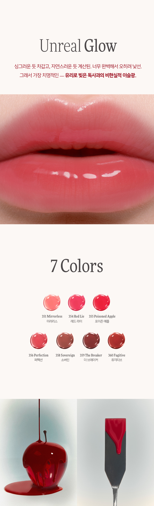
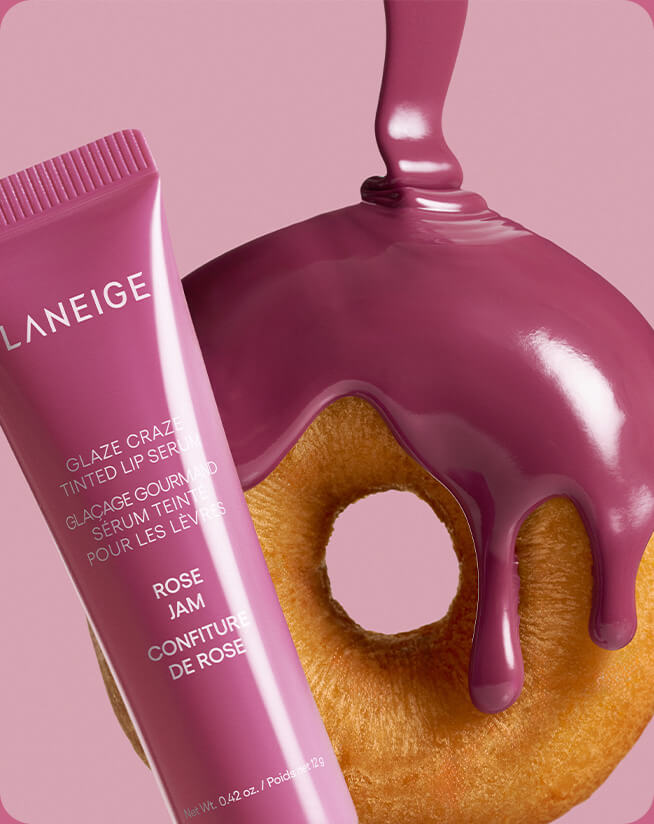

딘토 · 립 확대 + 컬러 차트

가져올 구조
광택의 결과를 먼저 보여주고, 컬러 차트를 이어 붙이는 흐름. 탐은 실제 립 3색을 같은 크기로 비교하고 1회·2회 도포컷을 별도로 보여줍니다.
공식 상세 보기 ↗원본 이미지 직접 확인. 3색 비교와 도포량 비교 섹션에 반영.2026.10.16 확인한 공식 비주얼과 탐 상세페이지 적용 판단.
레퍼런스 이미지는 해당 브랜드의 자산이며 탐뷰티 판매용 시안에는 사용하지 않습니다.

광택의 결과를 먼저 보여주고, 컬러 차트를 이어 붙이는 흐름. 탐은 실제 립 3색을 같은 크기로 비교하고 1회·2회 도포컷을 별도로 보여줍니다.
공식 상세 보기 ↗원본 이미지 직접 확인. 3색 비교와 도포량 비교 섹션에 반영.
제품의 색과 제형을 한눈에 연결하는 큰 사진. 탐은 젤리광과 실제 오일 제형으로 연결하고, 경쟁사의 도넛 연출은 가져오지 않습니다.
공식 상세 보기 ↗원본 이미지 직접 확인. 오일 포뮬러·제형 섹션에 반영.공식 론칭 캠페인의 광택 메시지와 올리브영의 제품·옵션·미니 구성. 올리브영 상세 이미지 전체는 직접 수집이 제한되어 시각 배치의 평가 근거로 사용하지 않았습니다.
“젤리광”을 중심 단어로 잡고 실제 입술 결과로 연결합니다. 미니·증정 구성은 탐의 확정 행사로 옮기지 않습니다.
공식 설명의 어플리케이터·오일 사용감·단독 및 레이어링 활용. 전체 시각 배치에 대한 평가는 하지 않았습니다.
빅 팁 사진을 실제 도포법과 연결하고, 양 조절부터 단독·레이어링까지 안내합니다. pH 반응과 수면팩 용도는 탐 제품으로 옮기지 않습니다.
공식 상품 설명 ↗